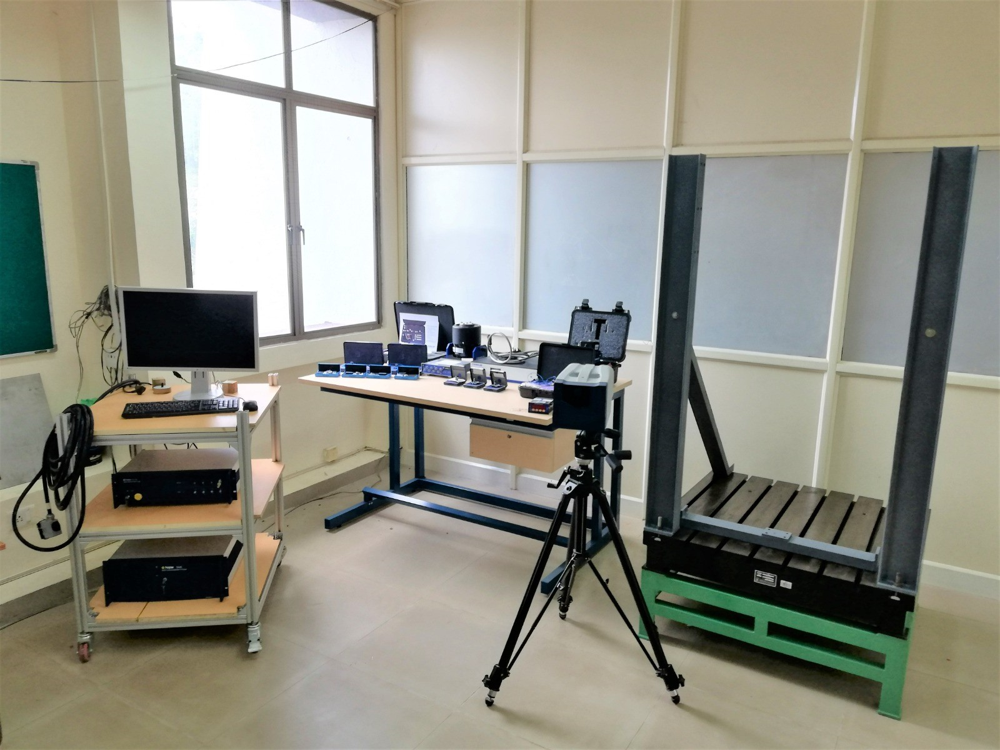
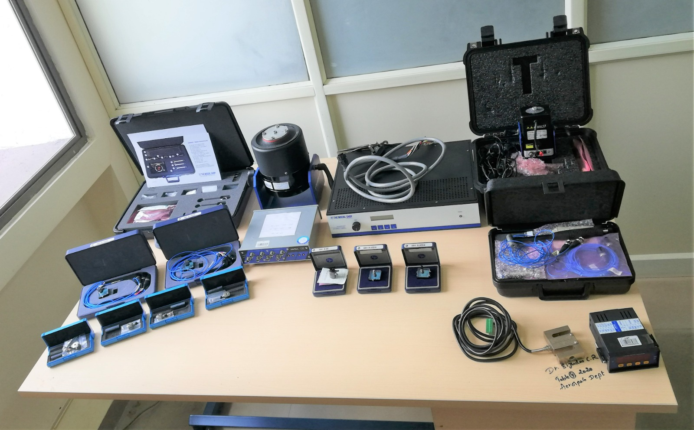

Welcome to the Structural Dynamics and Vibration lab of the Indian Institute of Space Science and Technology. This lab's state-of-the-art technology enables the conduct of numerous research projects related to dynamics and vibration problems for academics as well as for the industry. The students will get hands-on experience with the most sophisticated instruments that are available in the industry for performing dynamics experiments. The current focus of research is on tank sloshing, flexible continuous structures, such as the Urumi sword, the double pendulum, the wrinkling of thin elastic membranes, the mridangam's acoustics, aeroelasticity, hierarchical structures, etc. There are laboratory courses offered for undergraduate and postgraduate students. For their dissertation purpose, the lab accommodates undergraduate, graduate, and doctoral students.